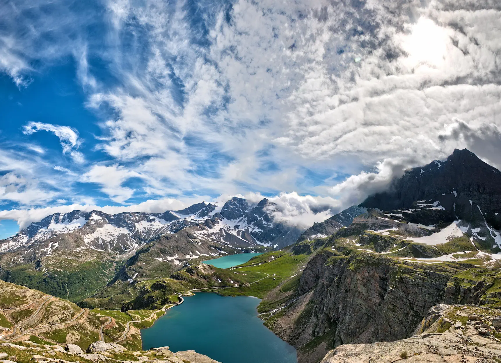

Gran Paradiso National Park
Graian Alps, Italy

Zhangjiajie National Park
Hunan, China
Tchindzoulou Island
Democratic Republic of the Congo
The Great Barrier Reef
Queensland, Australia
Northeast Greenland National Park
Greenland